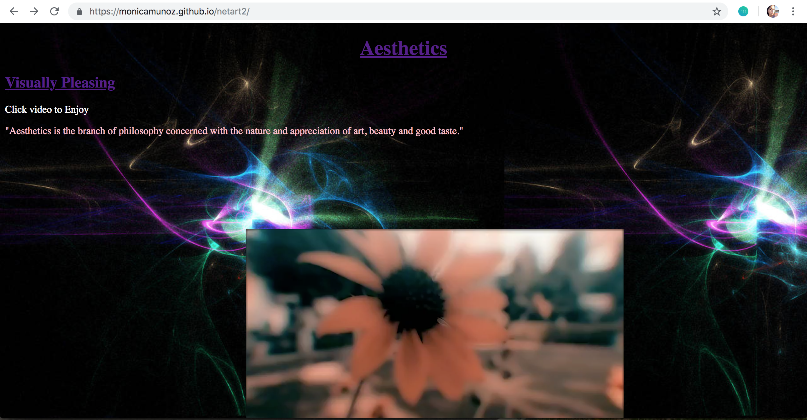

Aesthetics
This project is built off from project 3 NetArt which was very similar to this project but less interactive. I have included more of a over the top background to give it a dreamy playful effect. When creating this web art, I thought of surrealism and aesthetics. The viewer interacts with my art by navigating though it and loooking at different categories of art. Some aspects of art are nature, geometrical, animation and audio. Furthermore, the viewer can spend some time making their own art.